4.4. Comparison of ring removal methods on challenging sinograms¶
Ring artifact is the most pervasive type of artifacts in tomographic imaging. Numerous approaches for removing this artifact have been published over the years. In [R1], the author proposed many algorithms and a combination of them (algorithm 6, 5, 4, and 3) to remove most types of ring artifacts. This combined method, called algo-6543 for short, is easy-to-use and very effective. It have been implemented in Python, Matlab, and available in several tomographic Python packages. To know more about causes of ring artifacts, types of ring artifacts, and details of removal algorithms out of the original paper; users can check out the documentation page here. This section demonstrates the performance of the algo-6543 method and sorting-based methods in comparison with other methods on challenging sinograms. These data are available here and free to use. They are very useful for testing ring removal methods.
4.4.1. Same sample-type and slice but different in shape¶
The following images show sinograms and reconstructed images of two limestone rocks with different shapes before and after ring removal methods are applied.
Sinograms at the same detector-row:
Reconstructed images without using a ring removal method:
If using the combination of methods:
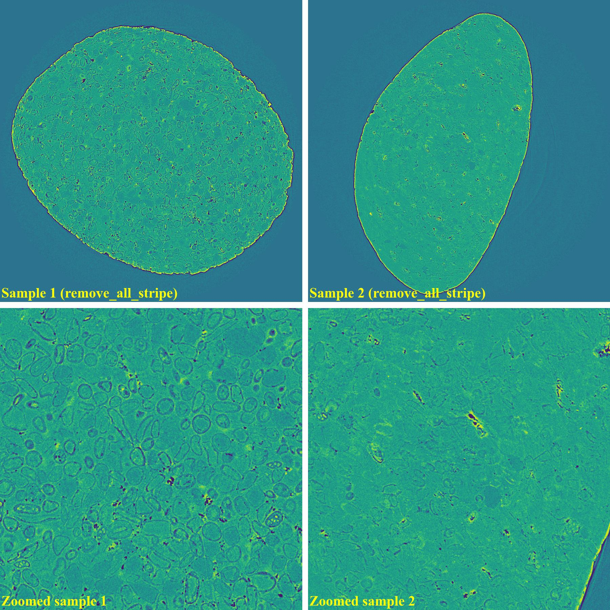import algotom.io.loadersaver as losa import algotom.prep.calculation as calc import algotom.prep.removal as rem import algotom.rec.reconstruction as rec input_base = "E:/data/" output_base = "E:/rings_removed/remove_all_stripe/" sinogram1 = losa.load_image(input_base + "/same_type_same_slice_different_shape_sample1.tif") sinogram2 = losa.load_image(input_base + "/same_type_same_slice_different_shape_sample2.tif") center1 = calc.find_center_vo(sinogram1) center2 = calc.find_center_vo(sinogram2) sinogram1 = rem.remove_all_stripe(sinogram1, snr=3.0, la_size=51, sm_size=21) sinogram2 = rem.remove_all_stripe(sinogram2, snr=3.0, la_size=51, sm_size=21) img_rec1 = rec.dfi_reconstruction(sinogram1, center1) img_rec2 = rec.dfi_reconstruction(sinogram2, center2) losa.save_image(output_base + "/rec_sample1.tif", img_rec1) losa.save_image(output_base + "/rec_sample2.tif", img_rec2)
If using the wavelet-fft-based method:
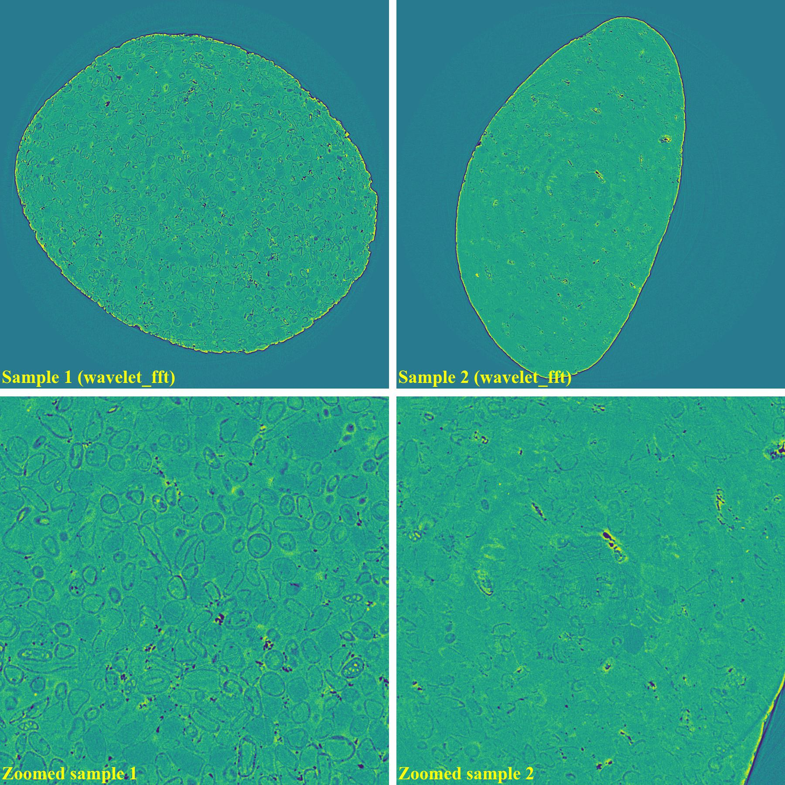sinogram1 = rem.remove_stripe_based_wavelet_fft(sinogram1, level=5, size=2, wavelet_name="db10") sinogram2 = rem.remove_stripe_based_wavelet_fft(sinogram2, level=5, size=2, wavelet_name="db10")
If using the fft-based method:
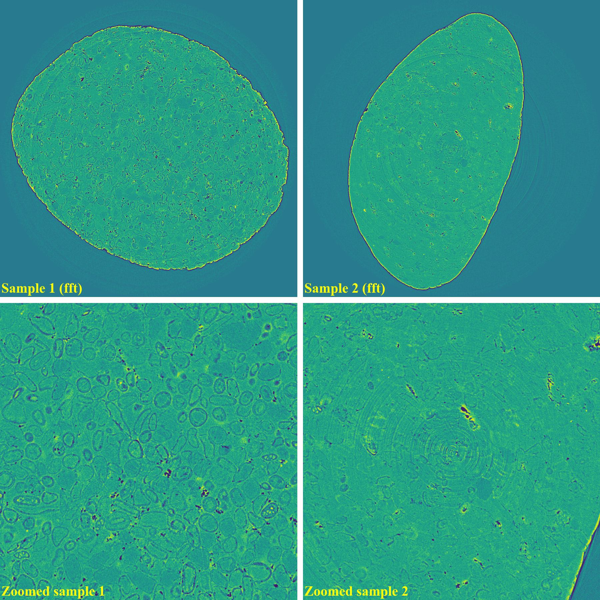sinogram1 = rem.remove_stripe_based_fft(sinogram1, u=20, n=10, v=0) sinogram2 = rem.remove_stripe_based_fft(sinogram2, u=20, n=10, v=0)
If using the normalization-based method:
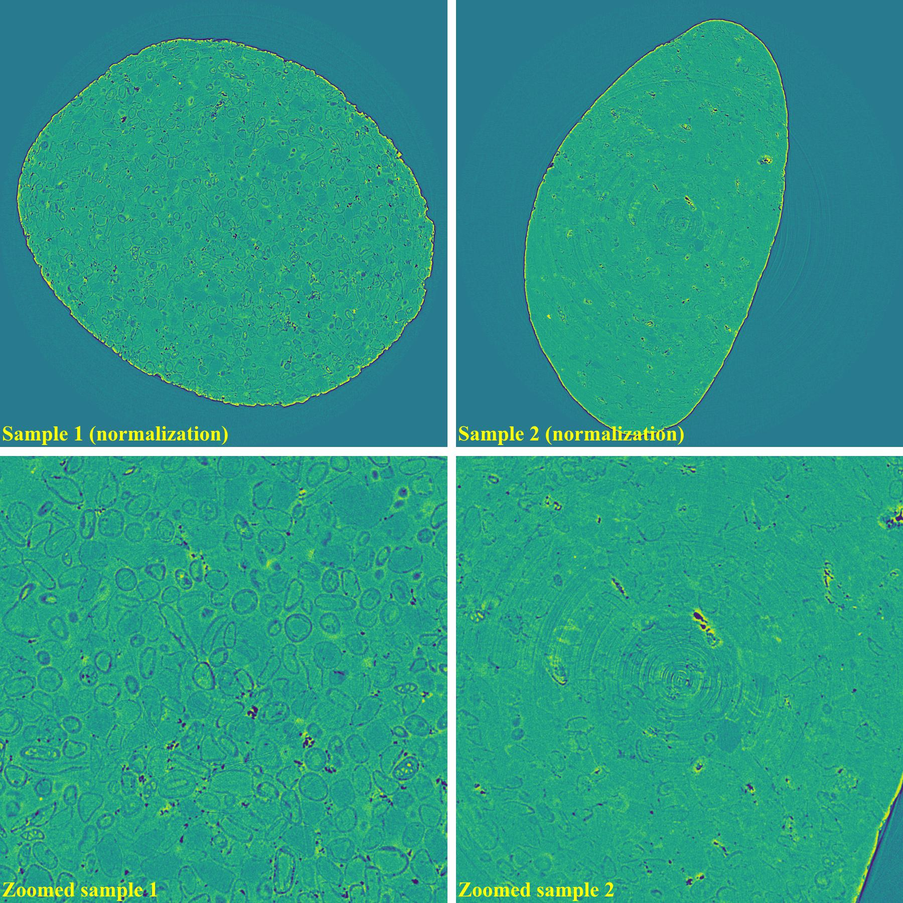sinogram1 = rem.remove_stripe_based_normalization(sinogram1, 11) sinogram2 = rem.remove_stripe_based_normalization(sinogram2, 11)
If using the regularization-based method:
As demonstrated, using the algo-6543 method gives the best results with least side-effect artifacts. For other methods, it’s impossible to use the same parameters for different samples or slices.
{kind=link}
{kind=link}
{kind=link}
{kind=link}
{kind=link}
{kind=link}
{kind=link}
4.4.2. Partial ring artifacts¶
The following images show sinograms and reconstructed images of two samples in slab shapes which cause partial ring artifacts.
Sinograms:
Reconstructed images without using a ring removal method:
If using the sorting-based method (algorithm 3 in [R1]):
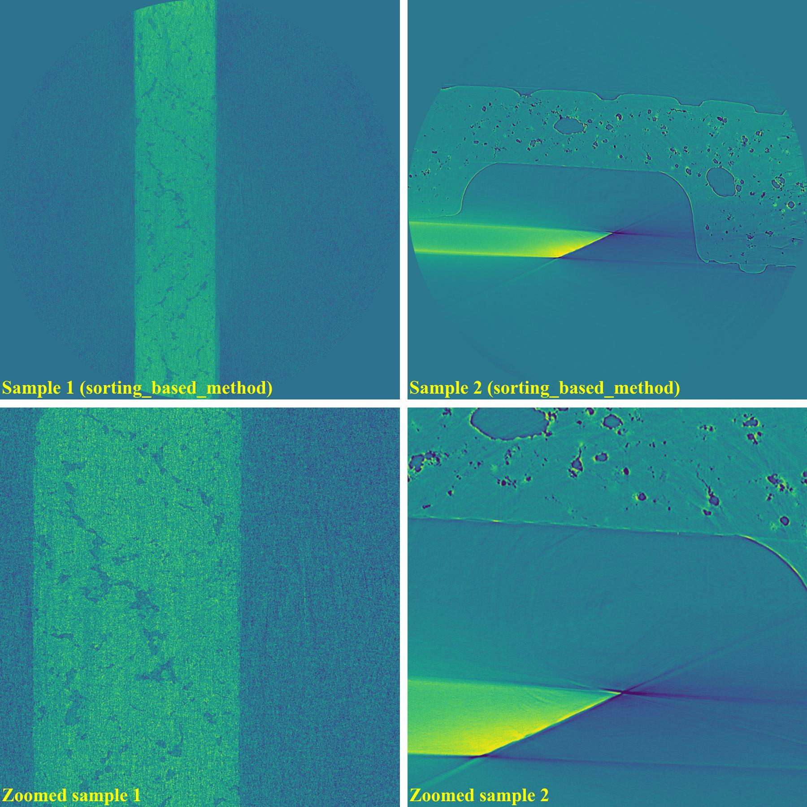import algotom.io.loadersaver as losa import algotom.prep.calculation as calc import algotom.prep.removal as rem import algotom.rec.reconstruction as rec input_base = "E:/data/" output_base = "E:/rings_removed/sorting_based_method/" sinogram1 = losa.load_image(input_base + "/sinogram_partial_stripe.tif") sinogram2 = losa.load_image(input_base + "/large_partial_rings.tif") center1 = calc.find_center_vo(sinogram1) center2 = calc.find_center_vo(sinogram2) print("center1 = ", center1) print("center2 = ", center2) sinogram1 = rem.remove_stripe_based_sorting(sinogram1, 51) sinogram2 = rem.remove_stripe_based_sorting(sinogram2, 51) img_rec1 = rec.dfi_reconstruction(sinogram1, center1) img_rec2 = rec.dfi_reconstruction(sinogram2, center2) losa.save_image(output_base + "/rec_sample1.tif", img_rec1) losa.save_image(output_base + "/rec_sample2.tif", img_rec2)
If using the wavelet-fft-based method:
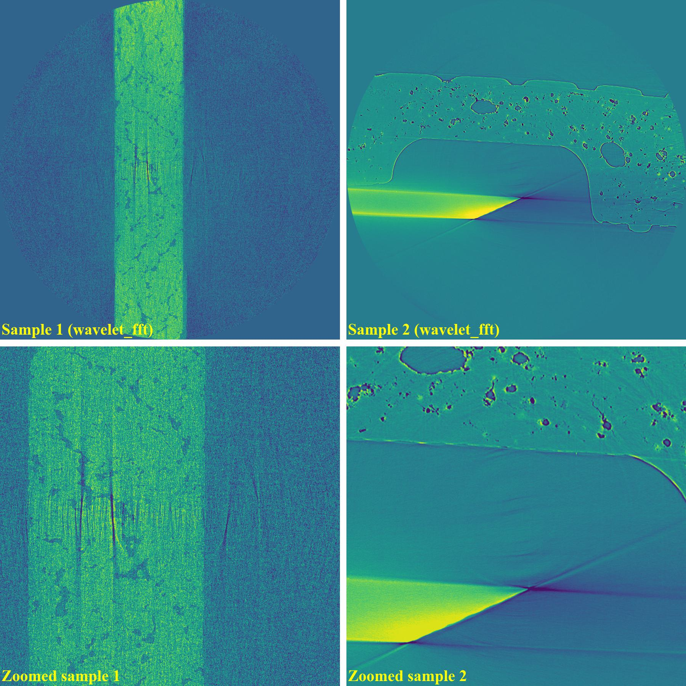sinogram1 = rem.remove_stripe_based_wavelet_fft(sinogram1, level=5, size=2, wavelet_name="db10") sinogram2 = rem.remove_stripe_based_wavelet_fft(sinogram2, level=5, size=2, wavelet_name="db10")
As can be seen, the original wavelet-fft-based method can’t remove partial rings effectively. In Algotom, this method is improved by combining with the sorting method, which is the key part of algorithm 3 in [R1]. This helps to avoid void-center artifacts when strong parameters of the wavelet-fft-based method are used as demonstrated below
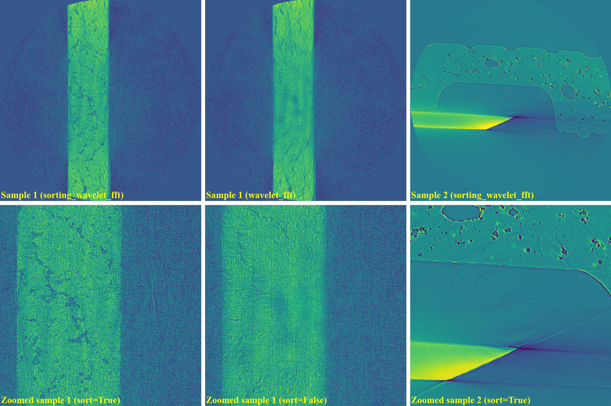sinogram1a = rem.remove_stripe_based_wavelet_fft(sinogram1, level=6, size=31, wavelet_name="db10", sort=True) sinogram1b = rem.remove_stripe_based_wavelet_fft(sinogram1, level=6, size=31, wavelet_name="db10", sort=False) sinogram2 = rem.remove_stripe_based_wavelet_fft(sinogram2, level=5, size=5, wavelet_name="db10", sort=True)
If using the normalization-based method:
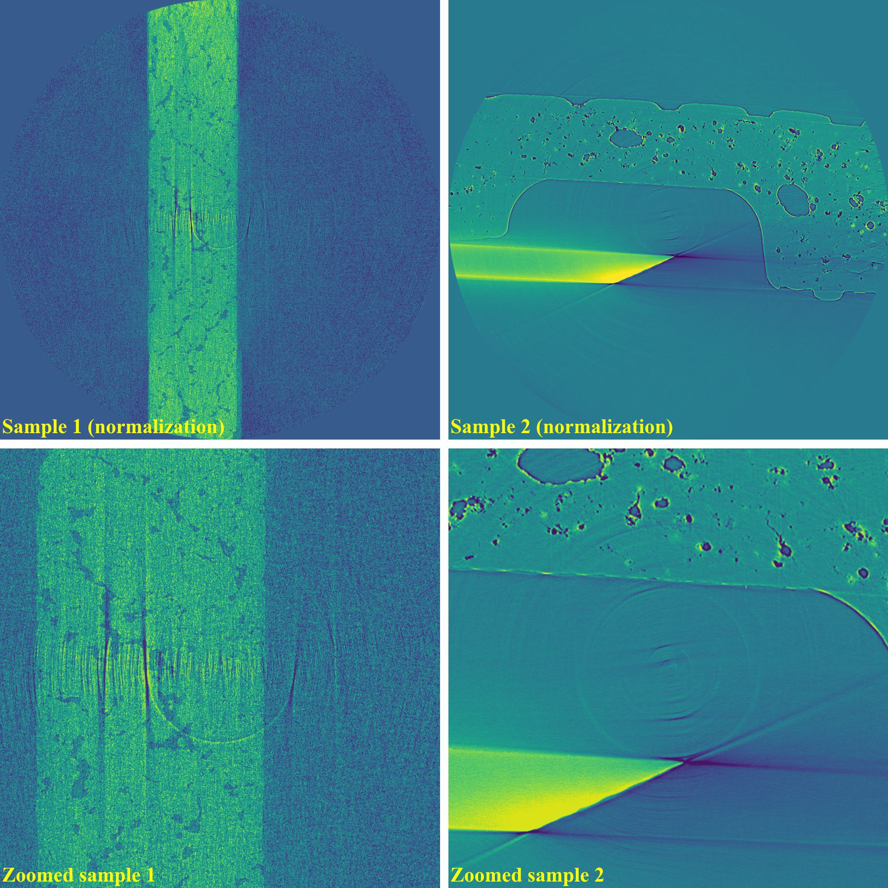sinogram1 = rem.remove_stripe_based_normalization(sinogram1, sigma=17, num_chunk=1) sinogram2 = rem.remove_stripe_based_normalization(sinogram2, sigma=31, num_chunk=1)
As shown above, the normalization-based method is not suitable for removing partial rings. However it can be improved by dividing a sinogram into many chunks of rows and combining with the sorting method.
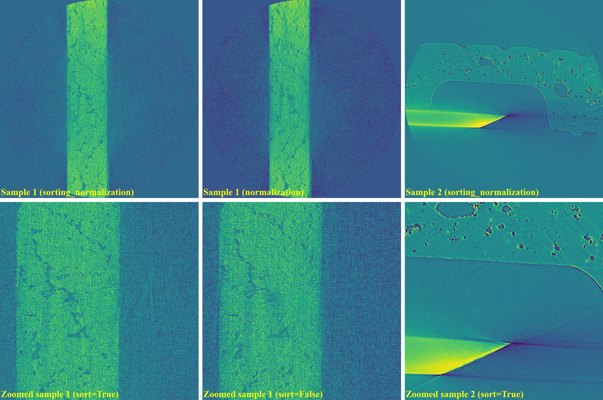sinogram1a = rem.remove_stripe_based_normalization(sinogram1, sigma=17, num_chunk=30, sort=True) sinogram1b = rem.remove_stripe_based_normalization(sinogram1, sigma=17, num_chunk=30, sort=False) sinogram2 = rem.remove_stripe_based_normalization(sinogram2, sigma=31, num_chunk=30, sort=True)
The above sub-section is to demonstrate the effectiveness of the sorting-based method in removing partial ring artifacts and improving other methods in avoiding void-center artifacts. Results of using the fft-based method and regularization-based method are not demonstrated here because their performance is similar to the wavelet-fft-based method and the normalization-based method.
{kind=link}
{kind=link}
{kind=link}
{kind=link}
{kind=link}
{kind=link}
{kind=link}
4.4.3. All types of ring artifacts¶
The following images show sinograms and reconstructed images of two limestone rocks with different shapes having all types of stripe/ring artifacts in one slice.
Sinograms:
Reconstructed images without using a ring removal method:
If using the combination of methods:
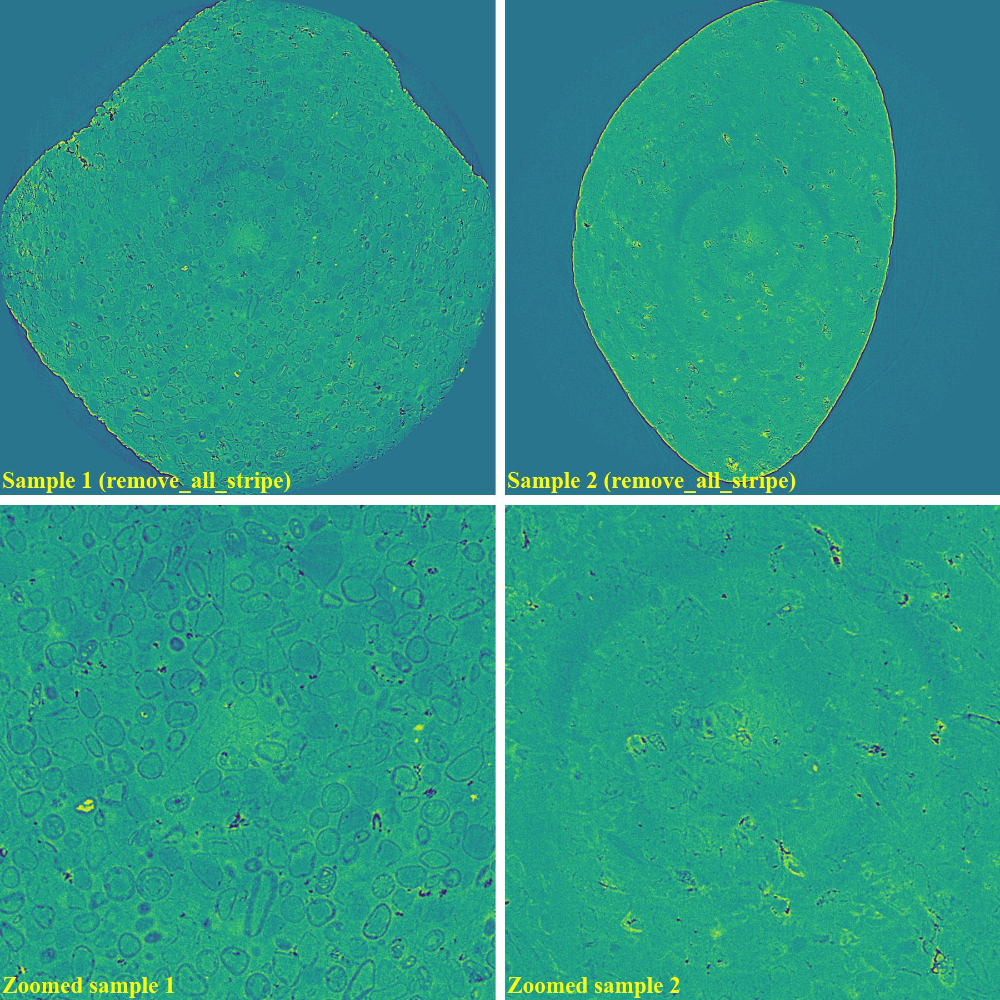import algotom.io.loadersaver as losa import algotom.prep.calculation as calc import algotom.prep.removal as rem import algotom.rec.reconstruction as rec input_base = "E:/data/" output_base = "E:/rings_removed/remove_all_stripe/" sinogram1 = losa.load_image(input_base + "/all_stripe_types_sample1.tif") sinogram2 = losa.load_image(input_base + "/all_stripe_types_sample2.tif") center1 = calc.find_center_vo(sinogram1) center2 = calc.find_center_vo(sinogram2) print("center1 = ", center1) print("center2 = ", center2) sinogram1 = rem.remove_all_stripe(sinogram1, snr=2.0, la_size=81, sm_size=31) sinogram2 = rem.remove_all_stripe(sinogram2, snr=3.0, la_size=81, sm_size=31) img_rec1 = rec.dfi_reconstruction(sinogram1, center1) img_rec2 = rec.dfi_reconstruction(sinogram2, center2) losa.save_image(output_base + "/rec_sample1.tif", img_rec1) losa.save_image(output_base + "/rec_sample2.tif", img_rec2)
As can be seen, there are still low-contrast ring artifacts which are difficult to detect and remove. These low-contrast rings are caused by the halo effect around blob areas on a scintillator. There is a strong removal method proposed in [R1] and its improvement can help to deal with such ring artifacts as below.
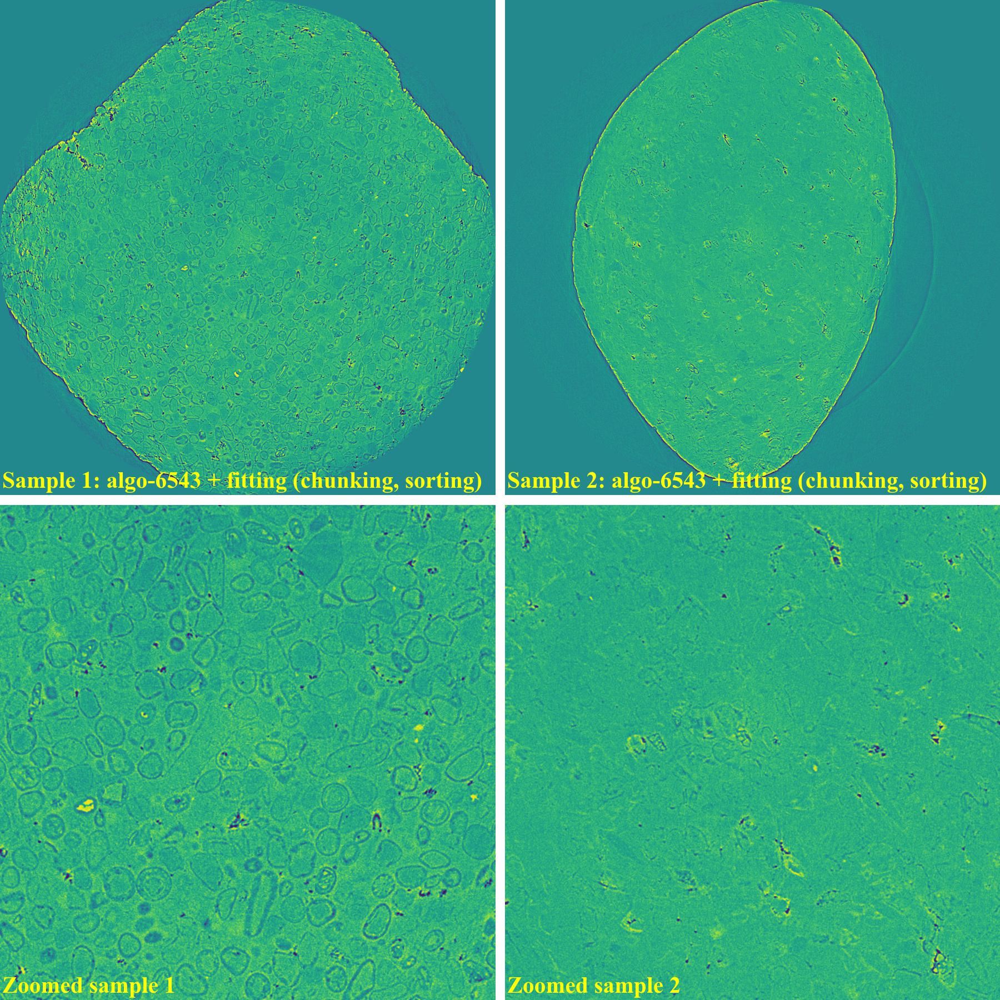sinogram1 = rem.remove_all_stripe(sinogram1, snr=2.0, la_size=81, sm_size=31) sinogram2 = rem.remove_all_stripe(sinogram2, snr=3.0, la_size=81, sm_size=31) sinogram1 = rem.remove_stripe_based_fitting(sinogram1, order=1, sigma=10, num_chunk=9, sort=True) sinogram2 = rem.remove_stripe_based_fitting(sinogram2, order=1, sigma=10, num_chunk=9, sort=True)
If using the wavelet-fft-based method with the sorting-based method:
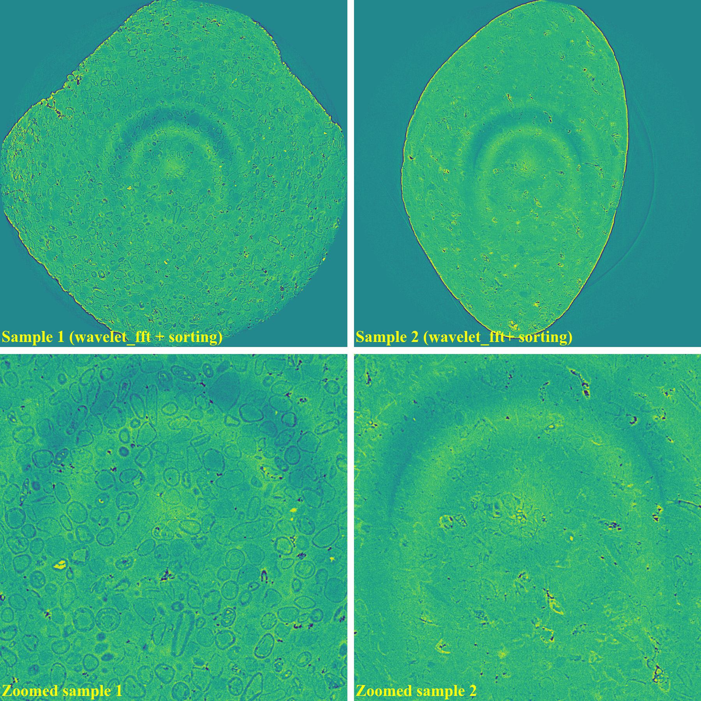sinogram1 = rem.remove_stripe_based_wavelet_fft(sinogram1, level=6, size=5, wavelet_name="db10", sort=True) sinogram2 = rem.remove_stripe_based_wavelet_fft(sinogram2, level=6, size=5, wavelet_name="db10", sort=True)
If using the regularization-based method with the sorting-based method:
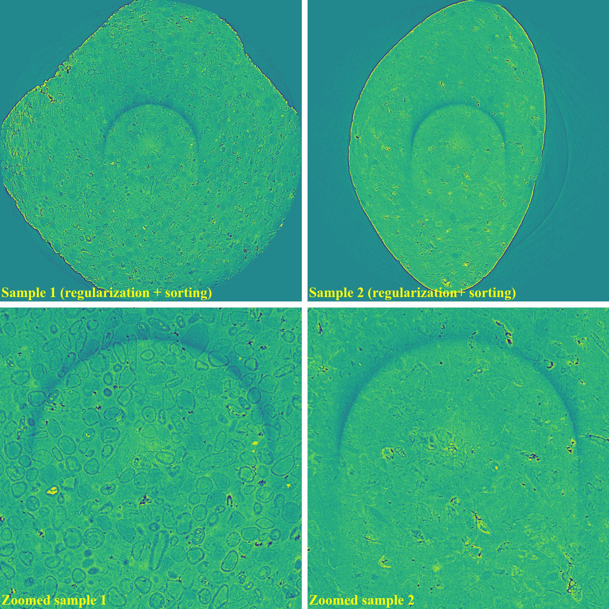sinogram1 = rem.remove_stripe_based_regularization(sinogram1, alpha=0.001, num_chunk=15, sort=True) sinogram2 = rem.remove_stripe_based_regularization(sinogram2, alpha=0.001, num_chunk=15, sort=True)
{kind=link}
{kind=link}
{kind=link}
{kind=link}
{kind=link}
{kind=link}
4.4.4. Having valid stripes (not artifacts)¶
For samples containing round-shape objects (tubes, spheres), they can produce sinograms having valid stripes. This is a problem for fft-based methods or normalization-based methods, but not for sorting-based methods.
{kind=link}
Results of using the combined method and the sorting-based method as below. Note that the remaining ring artifacts are insignificant. Although visible, they have nearly the same SNR (signal-to-noise ratio) as nearby background.
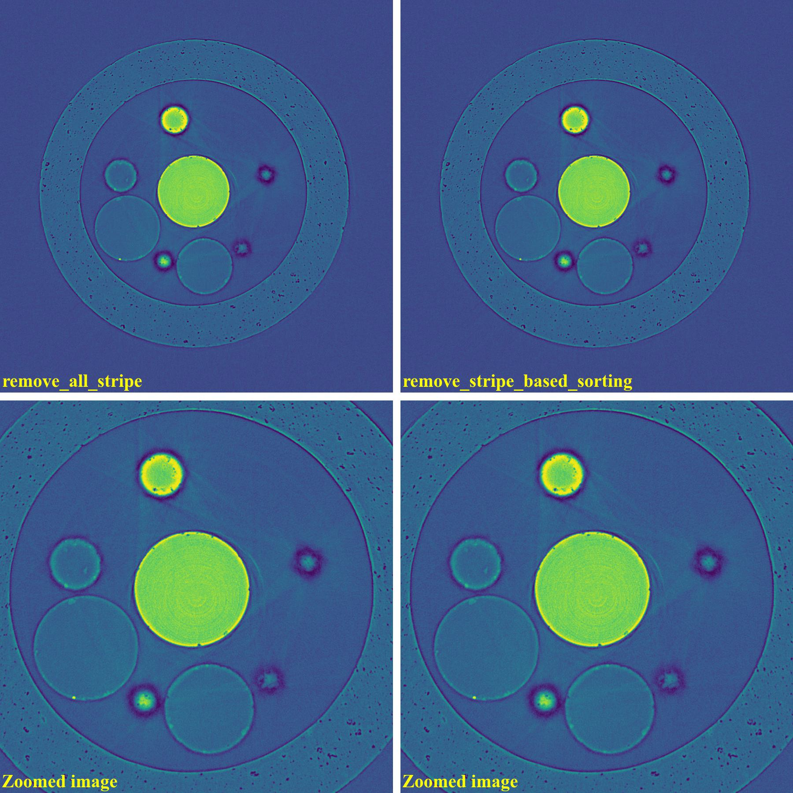import algotom.io.loadersaver as losa import algotom.prep.calculation as calc import algotom.prep.removal as rem import algotom.rec.reconstruction as rec input_base = "E:/data/" output_base = "E:/valid_stripes/rings_removed/" sinogram = losa.load_image(input_base + "/valid_stripes.tif") center = calc.find_center_vo(sinogram) print("center =", center) sinogram1 = rem.remove_all_stripe(sinogram, snr=3.0, la_size=31, sm_size=21) sinogram2 = rem.remove_stripe_based_sorting(sinogram, 21) img_rec1 = rec.dfi_reconstruction(sinogram1, center) img_rec2 = rec.dfi_reconstruction(sinogram2, center) losa.save_image(output_base + "/rec_img1.tif", img_rec1) losa.save_image(output_base + "/rec_img2.tif", img_rec2)
Results of using other methods are shown below. Although reduced strength, they still produce lots of side-effect artifacts for such a pretty clean sinogram.
{kind=link}
{kind=link}
{kind=link}
4.4.5. For cone-beam tomography¶
Post-processing ring-removal methods are often used for cone-beam tomography because reconstruction can’t be done sinogram-by-sinogram. However, they can cause void-center artifacts, which may not be visible in horizontal slices but clearly visible along vertical slices. More than that, these methods can’t remove side effects of unresponsive-stripe artifacts and fluctuating-stripe artifacts which not only give rise to ring artifacts but also streak artifacts in a reconstructed image.
{kind=link}
Certainly, we can apply pre-processing ring-removal methods along the sinogram direction. The only downside is that we have to store intermediate results for switching between the projection space and the sinogram space. It is common that commercial tomography systems output flat-field-corrected projection-images as 16-bit tif format (grayscale in the range of 0-65535). The following shows how to apply pre-processing methods along the sinogram direction step-by-step:
First of all, we convert tiffs to hdf file-format for fast slicing 3D data.
import timeit import numpy as np import algotom.io.converter as conv import algotom.io.loadersaver as losa input_base = "E:/cone_beam/rawdata/tif_projections/" output_file = "E:/tmp/projections.hdf" t0 = timeit.default_timer() list_files = losa.find_file(input_base + "/*.tif*") depth = len(list_files) (height, width) = np.shape(losa.load_image(list_files[0])) conv.convert_tif_to_hdf(input_base, output_file, key_path='entry/data', crop=(0, 0, 0, 0)) t1 = timeit.default_timer() print("Done!!!. Total time cost: {}".format(t1 - t0))Then load the converted data and apply pre-processing methods. Note about the change of data shape in each step.
import timeit import multiprocessing as mp from joblib import Parallel, delayed import numpy as np import algotom.io.loadersaver as losa import algotom.prep.removal as rem import algotom.prep.correction as corr input_file = "E:/tmp/projections.hdf" output_file = "E:/tmp/tmp/projections_preprocessed.hdf" data = losa.load_hdf(input_file, key_path='entry/data') (depth, height, width) = data.shape # Note that the shape of output data is (height, depth, width) # for faster writing to hdf file. output = losa.open_hdf_stream(output_file, (height, depth, width), data_type="float32") t0 = timeit.default_timer() # For parallel processing ncore = mp.cpu_count() chunk_size = np.clip(ncore - 1, 1, height - 1) last_chunk = height - chunk_size * (height // chunk_size) for i in np.arange(0, height - last_chunk, chunk_size): sinograms = np.float32(data[:, i:i + chunk_size, :]) # Note about the change of the shape of output_tmp (which is a list of processed sinogram) output_tmp = Parallel(n_jobs=ncore, prefer="threads")(delayed(rem.remove_all_stripe)(sinograms[:, j, :], 3.0, 51, 21) for j in range(chunk_size)) # Apply beam hardening correction if need to # output_tmp = np.asarray(output_tmp) # output_tmp = Parallel(n_jobs=ncore, prefer="threads")( # delayed(corr.beam_hardening_correction)(output_tmp[j], 40, 2.0, False) for j in range(chunk_size)) output[i:i + chunk_size] = np.asarray(output_tmp, dtype=np.float32) t1 = timeit.default_timer() print("Done sinograms: {0}-{1}. Time {2}".format(i, i + chunk_size, t1 - t0)) if last_chunk != 0: sinograms = np.float32(data[:, height - last_chunk:height, :]) output_tmp = Parallel(n_jobs=ncore, prefer="threads")(delayed(rem.remove_all_stripe)(sinograms[:, j, :], 3.0, 51, 21) for j in range(last_chunk)) # Apply beam hardening correction if need to # output_tmp = np.asarray(output_tmp) # output_tmp = Parallel(n_jobs=ncore, prefer="threads")( # delayed(corr.beam_hardening_correction)(output_tmp[j], 40, 2.0, False) for j in range(last_chunk)) output[height - last_chunk:height] = np.asarray(output_tmp, dtype=np.float32) t1 = timeit.default_timer() print("Done sinograms: {0}-{1}. Time {2}".format(height - last_chunk, height - 1, t1 - t0)) t1 = timeit.default_timer() print("Done!!!. Total time cost: {}".format(t1 - t0))Processed sinograms in the hdf-file then can be converted to 16-bit tiff images (i.e. to be used by cone-beam reconstruction software provided by tomography-system suppliers). Otherwise, Astra Toolbox can be used for reconstruction without the need of this conversion step.
import timeit import multiprocessing as mp from joblib import Parallel, delayed import numpy as np import algotom.io.loadersaver as losa input_file = "E:/tmp/projections_preprocessed.hdf" output_base = "E:/tmp/tif_projections/" data = losa.load_hdf(input_file, key_path='entry/data') # Note that the shape of data has been changed after the previous step # where sinograms are arranged along 0-axis. Now we want to save the data # as projections which are arranged along 1-axis. (height, depth, width) = data.shape t0 = timeit.default_timer() # For parallel writing tif-images ncore = mp.cpu_count() chunk_size = np.clip(ncore - 1, 1, depth - 1) last_chunk = depth - chunk_size * (depth // chunk_size) for i in np.arange(0, depth - last_chunk, chunk_size): mat_stack = data[:, i: i + chunk_size, :] mat_stack = np.uint16(mat_stack) # Convert to 16-bit data for tif-format file_names = [(output_base + "/proj_" + ("0000" + str(j))[-5:] + ".tif") for j in range(i, i + chunk_size)] # Save files in parallel Parallel(n_jobs=ncore, prefer="processes")(delayed(losa.save_image)(file_names[j], mat_stack[:, j, :]) for j in range(chunk_size)) if last_chunk != 0: mat_stack = data[:, depth - last_chunk:depth, :] mat_stack = np.uint16(mat_stack) # Convert to 16-bit data for tif-format file_names = [(output_base + "/proj_" + ("0000" + str(j))[-5:] + ".tif") for j in range(depth - last_chunk, depth)] # Save files in parallel Parallel(n_jobs=ncore, prefer="processes")(delayed(losa.save_image)(file_names[j], mat_stack[:, j, :]) for j in range(last_chunk)) t1 = timeit.default_timer() print("Done!!!. Total time cost: {}".format(t1 - t0))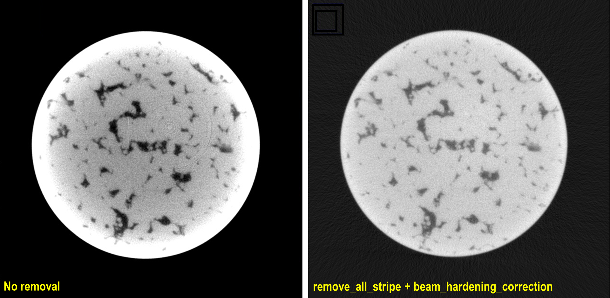Fig. 4.4.1 Reconstructed images, before and after applied pre-processing methods, from projection-images acquired by a commercial cone-beam system. Data provided by Dr Mohammed Azeem¶